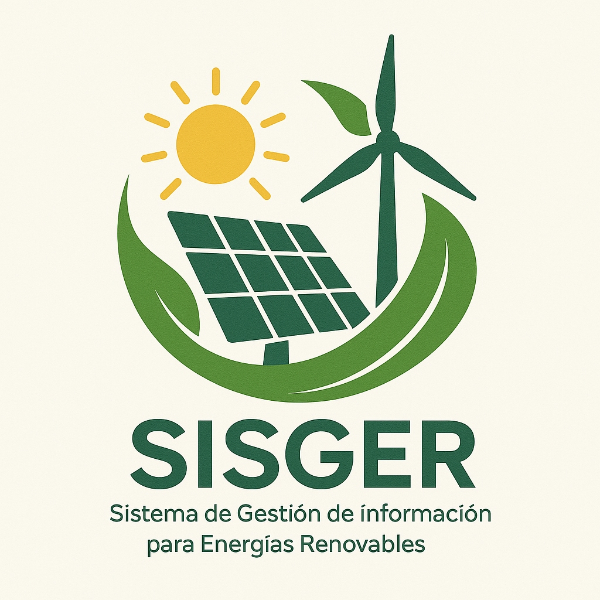

¿Qué es SISGER?
SISGER es un sistema diseñado para gestionar la información relacionada con las energías renovables, facilitando el acceso y la organización de datos relevantes.
Características
- Interfaz amigable y fácil de usar.
- Acceso a documentación técnica.
- Integración con bases de datos de energías renovables.